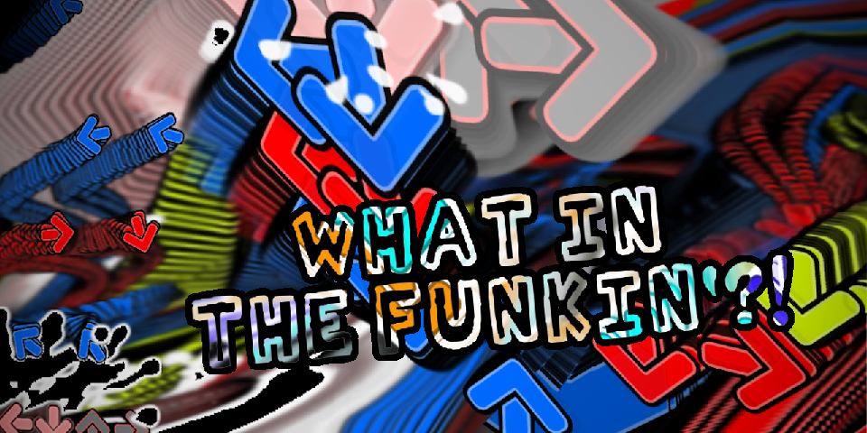
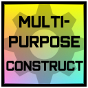
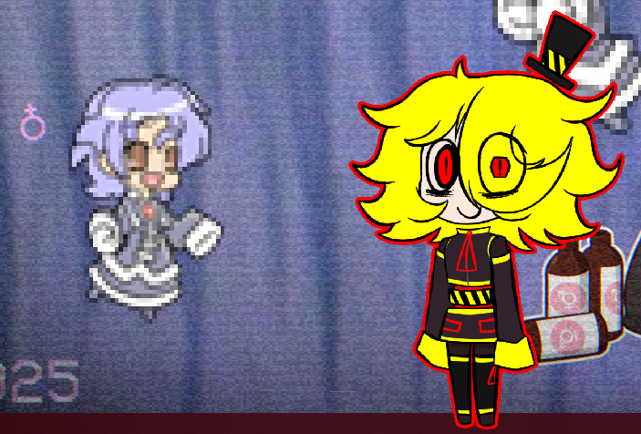
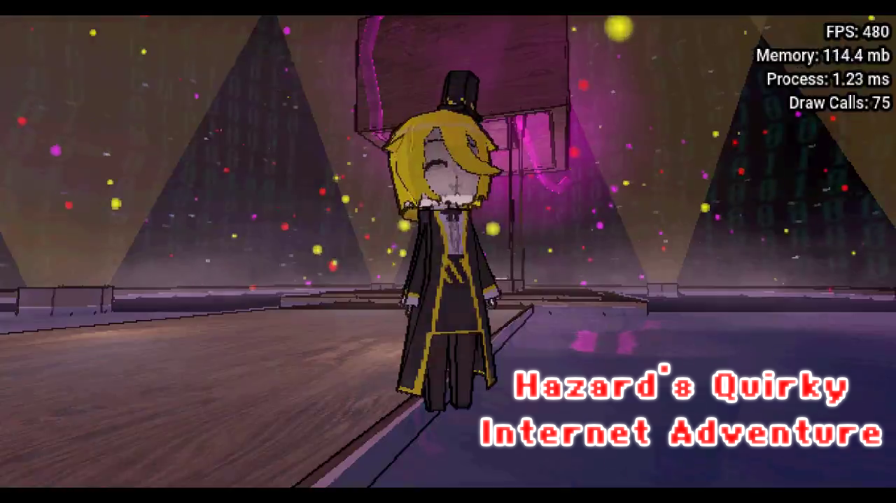
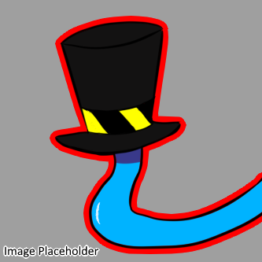
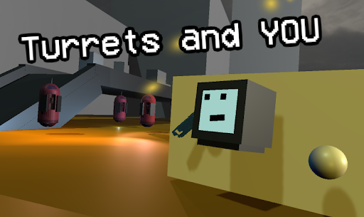
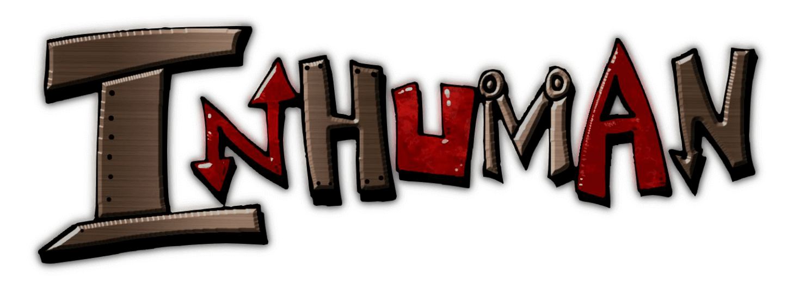

Current Projects
Projects that I am currently working on!
Note, all links will open in a new tab on this page.

Friday Night Funkin' but with modcharts!
|

A multi-purpose sandbox map for Garry's Mod made to account for all kinds of builds.
|
And of course, I'm working on this website!
Limbo Projects
Projects that are in a limbo-like state
(randomly worked on from time to time)

A simple desktop pet application made in Godot.
|

Game where you play as Hazard24 on some stupid silly 18+ quest!
|

A Tentacle Locker clone made in Godot as a for fun side project.
|

An abandoned social VR game, now overtaken by AI robots.
|
Abandoned Projects
Projects that are either finished, or were abandoned, doomed to never be finished.

A Friday Night Funkin' mod made in collaberation with CountNightShade.
|

An ambitious Friday Night Funkin' mod made to combine hard charts with modcharting gimicks.
|